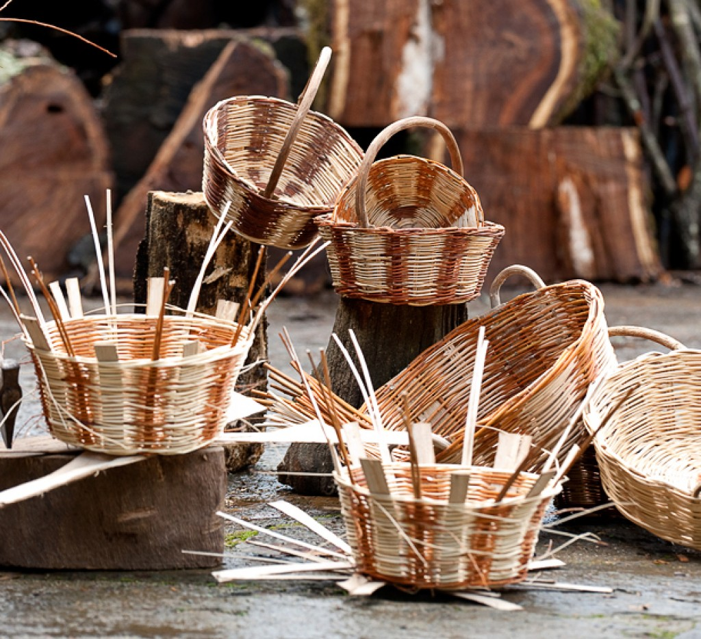
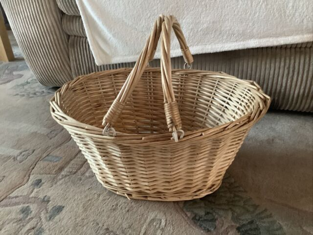
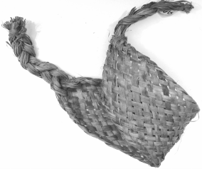
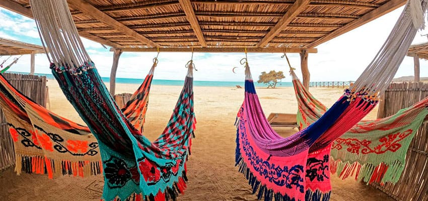
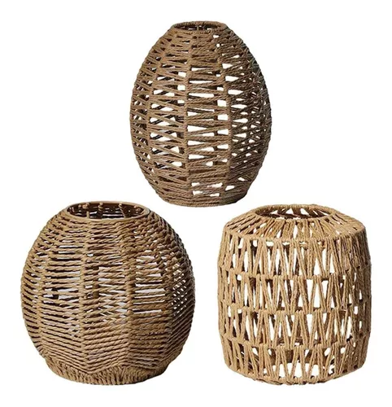

artesanias
Del Guaviare

Cesteria
La cestería es el arte de tejer objetos utilitarios para la vida cotidiana empleando fibras, principalmente, de origen vegetal.
Canastos
Un canasto es un recipiente hecho con mimbres u otros materiales similares para contener o transportar cosas

Cesta
La cesta es un recipiente tejido con mimbres, juncos, espartos, ratán u otras plantas, útil para transportar objetos.
Robaindias
Atrapa - indias o roba - indias: objeto exclusivo para los bailes, anteriormente lo utilizaban los hombres para escoger a su esposa

Matafrio
implemento tradicional elaborado en waruma y utilizado para exprimir la yuca rayada para la elaboración de fariña y cazabe.

Chinchorro
Chinchorro, nombre coloquial dado a la hamaca en las zonas del Llano, en Colombia y Venezuela, en Panamá y en algunas zonas de España.
Manillas
tejidas a mano con fibra de cumare y teñidas con pigmentos naturales
